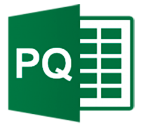
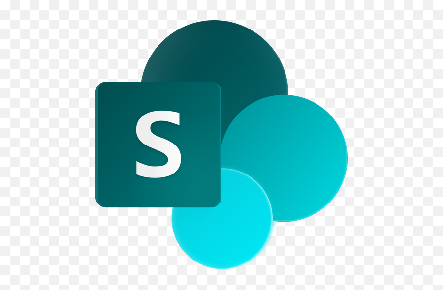

Diplômée d’un MBA en Data Engineering, je ne me limite pas à un seul rôle : je crée, j’expérimente et j’innove.
Polyvalente et déterminée, j’aime sortir de ma zone de confort et apprendre sur le terrain.
Aujourd’hui, je cherche un CDI où je pourrai mettre cette curiosité et cette rigueur au service de projets data ambitieux et humains.
MBA graduate in Data Engineering, I don’t limit myself to one role — I create, experiment, and innovate.
Versatile and driven, I enjoy stepping out of my comfort zone and learning by doing.
I’m now seeking a full-time role where I can bring this curiosity and precision to meaningful, data-driven projects.
Entre logique et créativité, la donnée est mon terrain de jeu.
Qui suis-je ?
J’aime chercher, comprendre et donner du sens aux données. Chaque projet est pour moi une occasion d’apprendre, de tester et d’améliorer mes approches.
Derrière chaque dashboard, il y a de la rigueur, de la curiosité et une vraie envie de créer de la valeur. Je crois en une data utile, claire et actionnable — au service des personnes qui la font vivre.

Parcours & Formation
Transformez la donnée en levier de performance, c'est ce que j'ai choisi de faire.
Mon parcours est un mélange assumé d'analytique, de technique et de design. De mes premiers projets web jusqu'à la conception de dashboards d'aide à la décision, j'ai toujours privilégié des approches visuelles, efficaces et exploitables.
- MBA Data Engineer (Paris) : Développement de solutions BI, automatisation des reportings, maîtrise des bases de données.
- Master Développement Web 3.0 & Science des données : Backend, frontend et analyse combinés.
- Bac+3 IA & Big Data : Machine Learning et projets concrets d'IA.
- Projets en entreprise (Senova, Inoni Tech) : Dashboards automatisés, IA appliquée, gains mesurables.
Ce qui me différencie :
- Capacité à livrer des analyses complètes, visuelles et automatisées.
- Réduction des tâches répétitives de reporting jusqu'à 80%.
- Des projets concrets avec un impact métier immédiat.
💼 Mes Compétences Techniques / Technical Skills
Outils et technologies que je maîtrise / Tools and technologies I master
Power BI

Tableau

SQL
Python
Power Automate
Looker Studio
Excel

Power Query

Alteryx
Pandas
NumPy
Machine Learning
Deep Learning

Streamlit
Git
GitHub

SharePoint
Monday.com
PostgreSQL
Snowflake
AWS
Google Analytics
Jupyter
VS Code
DAX
🎓 Mes Certifications

Certification Google Analytics

Certification Alteryx Designer Core
Certification Udemy Power Bi

Certification Power Query Excel